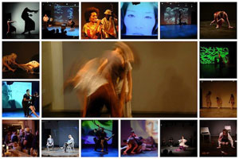
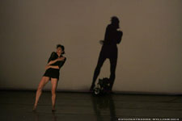
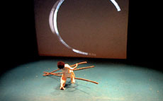
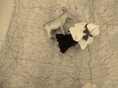

past performances
|
|
Between the Seas Festival 2014
Aktina Stathaki
Artistic and Producing Director
Between the Seas Festival of Mediterranean Performing Arts
|
 |
|
Between the Seas Festival returns to the Wild Project for its fourth edition from July 21-27 2014. This year's festival includes a strong theatre program with the world premiere of Chuck Mee's Matisse's Self Portrait, re-envisioned by Greek born, NYC based director Nadia Foskolou; and a 2- day celebration of new Mediterranean drama where 4 American directors (Tamilla Woodard, Ana Margineanu, Doug Howe and Noelle Ghoussaini) are invited to direct the work of 4 of the most dynamic Mediterranean playwrights (Lena Kitsopoulou, Esteve Soler, Mohammad Al Attar, Jeton Neziraj). This year's dance program is equally exciting with new work by Nejla Yatkin and Korhan Basaran, the return the Balletto di Sardegna with new provocative work inspired by Elsa Schiaparelli and a NYC premiere for Talia Beck, one of Israel's most up and coming young choreographers. Performance art, discussions and social events complement this year's eclectic programming. For full program and schedule visit: www.betweentheseas.org
|
|
|
DANCE:
Nejla Y. Yatkin
Nejla Y. Yatkin Dance (Turkey)
What dreams May come
Tuesday 7/22 @ 8pm; Friday 7/25 @ 8pm; Sunday 7/27 @ 8:30pm
A new multi media solo dance piece by award winning Turkish choreographer Nejla Yatkin. Set to music by Turkish composers Ahmed Saygun and Kamran Ince, this new solo dance explores the intersection and connection between East and West through movement, space, form, light and shadow.
ASMED-Balletto Teatro di Sardegna (Italy)
ARAGOSTA
Tuesday 7/22 @ 8pm; Thursday 7/24 @ 7pm
Inspired by the great non-conformist Italian stylist of the thirties, Elsa Schiaparelli the new choreography stems from that unstoppable pulse to create and express oneself at all costs and despite everything; in spite of the imposed cultural roles, the crushing social conventions and the timeless conflict between the natural and social being. World premiere.
Nejla Yatkin/Mersiha Mesihovic (Bosnia)
Friday 7/25 @ 8pm; Sunday 7/27 @ 8:30pm
Balletto di Sardegna/Mersiha Mesihovic (Bosnia)
Thursday 7/24 @ 8pm
Mersiha Mesihovic presents two of her latest works, Dissonance, and I Am. Dissonance explores a perverse position: that the sense of despair Mesihovic associates with her native Bosnia and Herzegovina is fertile ground for the extreme joy expressed in the region’s art. The work express the relationship between despair and joy and the contradictions of being human. Dissonance brims with emotion. As the piece progresses, the surreal chain of images make our existence seem even more impossible. It is loaded with sad, amusing and shocking events that challenge our values and questions our perception of what is normal.
With its raw and honest physicality "I am" takes on a personal journey where anything seems possible. With it s captivating strength and emotional complexity played out to gritty, percussive yet ambiguous sounds created by Paul Matthis in collaboration with Mesihovic "I am" brings us face to face with the surreal and raw nature of our existence where we can only but once again be astonished with the Inconceivability of our reality. The only thing left to do is to reach inwards in the ever so ephemeral yet incessant encounters with the absurdity of our world.
|
|
|
PERFORMANCE:
UNGUARDED (USA)
The Sacred Way: Protagonist and Hero?
Wednesday 7/23 @ 8pm; Thursday 7/24 @ 9pm
A woman wears aspects of an immigrant: woman, man, child. PROTAGONIST AND HERO? The Sacred Way is a theatrical device using performance to addresses the issues of security for refugees/immigrants and their journeys for survival.
Mica Dvir (Israel)
Shameful Occurrences, Disturbing Facts, Light And Darkness'
Wednesday 7/23 @ 8pm; Thursday 7/24 @ 9pm
An interdisciplinary one-woman show, the performance combines theater, video and performance art to deal with the Israeli occupation of the Palestinian territories of the West Bank. The work brings up criticism towards Israel regarding its progression within these territories and self-criticism regarding the performer's personal passivity towards the occupation.
|
|
|
THEATER:
Nadia Foskolou (Greece/USA)
Hôtel Méditerranée
Monday 7/21 @ 8pm; Saturday 7/26 @ 8:30pm
Based on Chuck Mee’s play Matisse’s Self Portrait and the film documentary Yiannis Moralis by Stelios Charalampopoulos, Hôtel Méditerranée is an original new performance by acclaimed Greek director Nadia Foskolou that explores the angsts and pleasures behind all great creativity and behind all human existence. World premiere.
|
|
|
SPECIAL EVENT:
4x4: NYC meets the Med.
4X4 is a new program of stage readings, free and open to the public, that bring together American directors and actors with Mediterranean playwrights. Supported by LMCC and Institut Ramon Llul.
Saturday 7/26 @ 2pm: One Flew over the Kosovo Theater, by Jeton Neziraj (Kosovo), directed by Doug Howe
Saturday 7/26 @ 6pm: The Price, by Lena Kitsopoulou (Greece)/ A Chance Encounter by Mohammad al Attar (Syria), directed by Noelle Ghoussaini
Sunday 7/27: Againsti Progress/Against Democracy/Against Love by Esteve Soler (Catalonia, Spain) directed by Tamilla Woodard & Ana Margineanu
3pm: Against Progress
4pm: Against Democracy
5pm: Against Love - Followed by Discussion
|